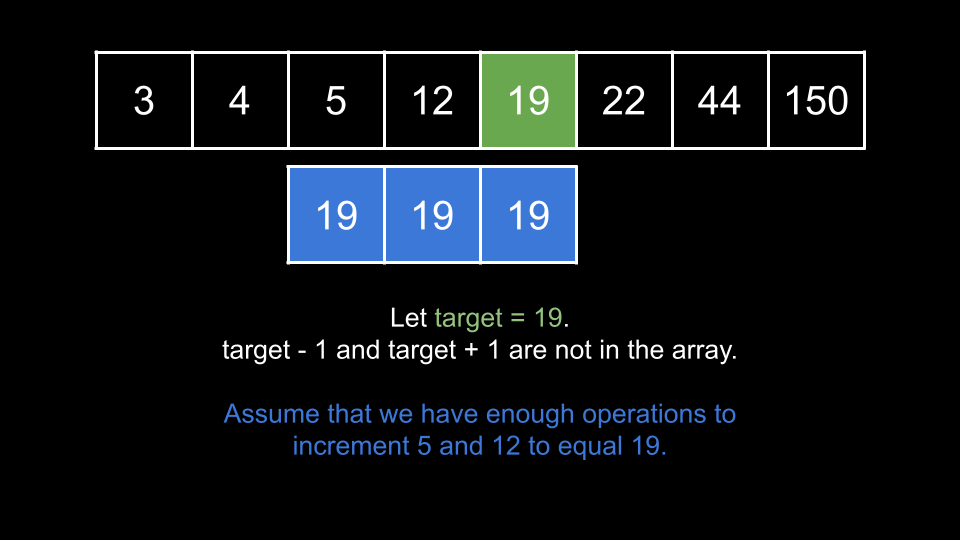
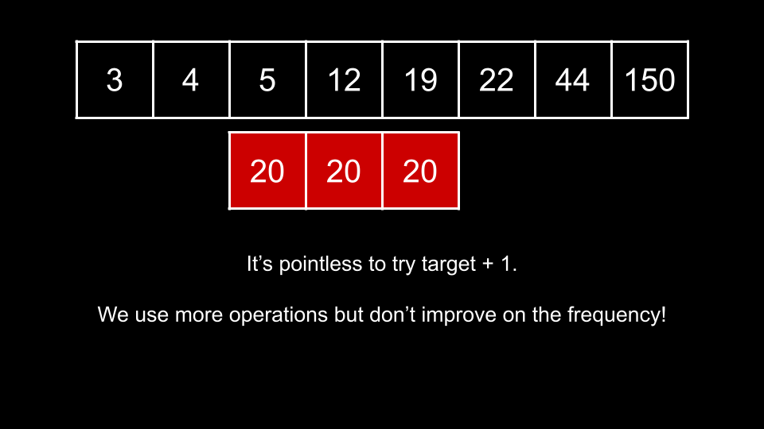
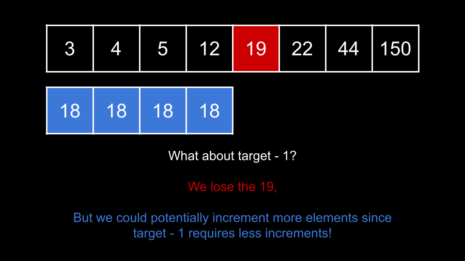
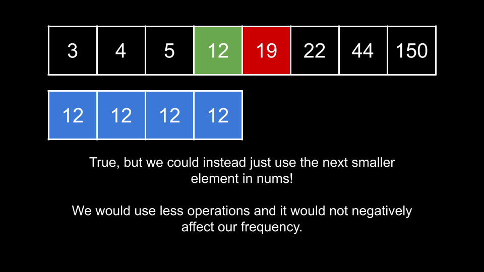
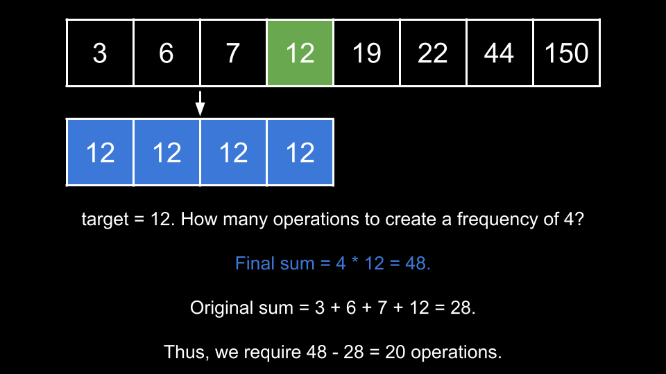

Intuition
In this problem, we want to make as many elements as we can equal using k increments.
Let's say that we choose a number target and want to maximize its frequency. Intuitively, the elements
that we would increment would be the elements that are closest to target (and less than
target, since we can only increment).
So what number should we choose for target? The optimal target will already exist in the
array. Why?
target is in nums, but target - 1 and target + 1 are
not in nums. Let's say that we can increment x elements to be equal to
target using at most k operations. We will prove that making target - 1
or target + 1 the most frequent element does not lead to better results.

target + 1 the most frequent element, since this would
cost us x extra operations and we would not improve on our answer. The same goes for even larger
elements target + 2 and etc.

target - 1? Compared with making target the most frequent element, we would
lose the values representing these targets from our max frequency, but we would save x
operations which we could potentially use to increment more than one extra element and thus improve our answer.

nums that is less
than target. That is, if we were to sort nums, consider the element that comes right
before target. If we were to instead consider this element as the target, we would save more than
x operations without negatively affecting the frequency relative to considering target -
1.

absent that is not in nums, consider the greatest
number in nums smaller than absent as smallerTarget. The number of
operations to raise some number of elements to smallerTarget will always be less than the number of
steps needed to raise them to absent.
target must exist in nums. We can iterate over
nums and consider each element as target.
For a given value of target, how can we efficiently check the frequency we could achieve? As we
mentioned at the start, we would want to increment elements that are closest to target. As such, we
will start by sorting nums so that as we iterate over the elements, we know the elements closest to
target are just to the left of target.
Now that nums is sorted, consider the first element to the left of target as
smaller. As smaller is the closest element to target, we want to increment it
to equal target. This will cost us target - smaller operations. Now, consider the next
element to the left as smaller2. Now this is the element closest to target, so we
increment it using target - smaller2 operations. We continue this process until we run out of
operations.
As you can see, the number of operations required is simply the difference between target and the
numbers we are incrementing. Let's say that the final frequency of target was 4. We would
have a sum of 4 * target. The number of operations would be this sum minus the sum of the elements
before we incremented them. Consider the following example:

If you aren't already familiar with the sliding window technique, we highly recommend reading this free article from LeetCode's official DSA course, where sliding window is explained in detail with multiple examples.
This brings us to our solution. We will use a sliding window over the sorted nums. For each element
nums[right], we will treat target as this element and try to make every element in our
window equal to target.
The size of the window is right - left + 1. That means we would have a final sum of (right - left
+ 1) * target. If we track the sum of our window in a variable curr, then we can calculate the
required operations as (right - left + 1) * target - curr. If it requires more than k
operations, we must shrink our window. Like in all sliding window problems, we will use a while loop to
shrink our window by incrementing left until k operations are sufficient.
Once the while loop ends, we know that we can make all elements in the window equal to
target. We can now update our answer with the current window size. The final answer will be the largest
valid window we find after iterating right over the entire input.
Algorithm
nums.left = 0, the left pointer.ans = 0, the best answer we have seen so far.curr = 0, the sum of the elements currently in our window.right over the indices of nums:
target = nums[right].target to curr.right - left + 1 multiplied by target, minus
curr is greater than k:
nums[left] from curr.left.ans with the current window size if it is larger.ans.Implementation
Be careful! Given the constraints, we may run into integer overflow. Use
longaccordingly in Java and C++ (Python doesn't have overflow).
Java
class Solution {
public int maxFrequency(int[] nums, int k) {
Arrays.sort(nums);
int left = 0;
int ans = 0;
long curr = 0;
for (int right = 0; right < nums.length; right++) {
int target = nums[right];
curr += target;
while ((right - left + 1) * target - curr > k) {
curr -= nums[left];
left++;
}
ans = Math.max(ans, right - left + 1);
}
return ans;
}
}
C++
class Solution {
public:
int maxFrequency(vector& nums, int k) {
sort(nums.begin(), nums.end());
int left = 0;
int ans = 0;
long curr = 0;
for (int right = 0; right < nums.size(); right++) {
long target = nums[right];
curr += target;
while ((right - left + 1) * target - curr > k) {
curr -= nums[left];
left++;
}
ans = max(ans, right - left + 1);
}
return ans;
}
};
Python3
class Solution:
def maxFrequency(self, nums: List[int], k: int) -> int:
nums.sort()
left = 0
ans = 0
curr = 0
for right in range(len(nums)):
target = nums[right]
curr += target
while (right - left + 1) * target - curr > k:
curr -= nums[left]
left += 1
ans = max(ans, right - left + 1)
return ans
Complexity Analysis
Given nn
as the length of nums,
Time complexity: O(n⋅logn)O(n \cdot \log{}n)
Despite the while loop, each iteration of the for loop is amortized O(1)O(1). The while loop only runs
O(n)O(n) times
across all iterations. This is because each iteration of the while loop increments left. As
left can only increase and cannot exceed n, the while loop never performs more
than n iterations total. This means the sliding window process runs in O(n)O(n).
However, we need to sort the array, which costs O(n⋅logn)O(n \cdot \log{}n).
Space Complexity: O(logn)O(\log n) or O(n)O(n)
We only use a few integer variables, but some space is used to sort.
The space complexity of the sorting algorithm depends on the implementation of each programming language:
Intuition
This approach is an extension of the previous one.
Notice that the only thing we care about is the length of the longest window. We don't need to know
what the window itself is. As we slide the window over the array, let's say we find a valid window with a length of
len. We no longer care about any windows with lengths less than len,
because they could not possibly improve on our answer.
The purpose of the while loop in the previous approach is to shrink the window until it is valid again. In this approach, we will not shrink the window - we will just try to grow it as large as we can.
We will keep the same condition in the while loop that checks if the current window [left, right] is
valid, but instead of using a while loop, we will just use an if statement. This means left never
increases by more than 1 per iteration. Because right also increases by 1 per
iteration, if we cannot find a valid window, we will simply be sliding a window with static size across the array.
However, if we add an element nums[right] to the window and the window is valid, then the if statement
will not trigger, and left will not be incremented. Thus, we will increase our window size by
1. In this scenario, it implies the current window [left, right] is the best window we
have seen so far.
As you can see, it is actually impossible for our window size to decrease, since each iteration increases
rightby1andleftby either0or1.
Because our window size cannot decrease, it also means that the size of the window always represents the length of
the best window we have found so far - analogous to ans from the previous approach.
At the end of the iteration, the size of our window is n - left. We return this as the answer.
Algorithm
nums.left = 0, the left pointer.curr = 0, the sum of the elements currently in our window.right over the indices of nums:
target = nums[right].target to curr.right - left + 1 multiplied by target, minus curr
is greater than k:
nums[left] from curr.left.nums.length - left.Implementation
Java
class Solution {
public int maxFrequency(int[] nums, int k) {
Arrays.sort(nums);
int left = 0;
long curr = 0;
for (int right = 0; right < nums.length; right++) {
int target = nums[right];
curr += target;
if ((right - left + 1) * target - curr > k) {
curr -= nums[left];
left++;
}
}
return nums.length - left;
}
}
C++
class Solution {
public:
int maxFrequency(vector& nums, int k) {
sort(nums.begin(), nums.end());
int left = 0;
long curr = 0;
for (int right = 0; right < nums.size(); right++) {
long target = nums[right];
curr += target;
if ((right - left + 1) * target - curr > k) {
curr -= nums[left];
left++;
}
}
return nums.size() - left;
}
};
Python3
class Solution:
def maxFrequency(self, nums: List[int], k: int) -> int:
nums.sort()
left = 0
curr = 0
for right in range(len(nums)):
target = nums[right]
curr += target
if (right - left + 1) * target - curr > k:
curr -= nums[left]
left += 1
return len(nums) - left
Complexity Analysis
Given nn
as the length of nums,
Time complexity: O(n⋅logn)O(n \cdot \log{}n)
Each iteration of the for loop costs O(1)O(1). This means the sliding window process runs in O(n)O(n).
However, we need to sort the array, which costs O(n⋅logn)O(n \cdot \log{}n).
Space Complexity: O(logn)O(\log n) or O(n)O(n)
We only use a few integer variables, but some space is used to sort.
The space complexity of the sorting algorithm depends on the implementation of each programming language:
Intuition
Note: the previous two approaches are the optimal solutions and are sufficient to solve the problem. Here, we will look at another unique way to approach the problem for the sake of completeness.
Given an index i, if we treat nums[i] as target, we are concerned with how
many elements on the left we can take. In the earlier approaches, we used a sliding window. In this approach, we
will directly find the left-most index of these elements using binary search.
Let's say that best is the index of the furthest element to the left that we could increment to target
= nums[i]. Note that here, best is analogous to what left was after the while loop
finished in the first approach. How do we find best?
The value of best must be in the range [0, i]. We will perform a binary search on this
range. For a given index mid:
count = i - mid + 1.target would be finalSum
= count * target.
mid to index i.
We can use a prefix sum to find this originalSum.
operationsRequired = finalSum - originalSum.operationsRequired > k, it's impossible to include the index mid. We update
left = mid + 1.
best = mid and
right = mid - 1.
Essentially, we are binary searching the left bound from the first approach for a given right bound i.
If we pre-process a prefix sum, then for each mid, we have all the necessary information to find operationsRequired.
Algorithm
check(i):
target = nums[i], the current target.left = 0, the left bound of the binary search.right = i, the right bound of the binary search.best = i, the best (furthest left) index that we can increment to
target.
left <= right
mid = (left + right) / 2.count = i - mid + 1.finalSum = count * target.originalSum = prefix[i] - prefix[mid] + nums[mid].operationsRequired = finalSum - originalSum.operationsRequired > k, move left = mid + 1.best = mid and right = mid - 1.i - best + 1.nums.prefix sum of nums.ans = 0.i over the indices of nums:
ans with check(i) if it is larger.ans.Implementation
Be careful! Given the constraints, we may run into integer overflow. Use
longaccordingly in Java and C++ (Python doesn't have overflow).
Java
class Solution {
public int check(int i, int k, int[] nums, long[] prefix) {
int target = nums[i];
int left = 0;
int right = i;
int best = i;
while (left <= right) {
int mid = (left + right) / 2;
long count = i - mid + 1;
long finalSum = count * target;
long originalSum = prefix[i] - prefix[mid] + nums[mid];
long operationsRequired = finalSum - originalSum;
if (operationsRequired > k) {
left = mid + 1;
} else {
best = mid;
right = mid - 1;
}
}
return i - best + 1;
}
public int maxFrequency(int[] nums, int k) {
Arrays.sort(nums);
long[] prefix = new long[nums.length];
prefix[0] = nums[0];
for (int i = 1; i < nums.length; i++) {
prefix[i] = nums[i] + prefix[i - 1];
}
int ans = 0;
for (int i = 0; i < nums.length; i++) {
ans = Math.max(ans, check(i, k, nums, prefix));
}
return ans;
}
}
C++
class Solution {
public:
int check(int i, int k, vector& nums, vector& prefix) {
int target = nums[i];
int left = 0;
int right = i;
int best = i;
while (left <= right) {
int mid = (left + right) / 2;
long count = i - mid + 1;
long finalSum = count * target;
int originalSum = prefix[i] - prefix[mid] + nums[mid];
int operationsRequired = finalSum - originalSum;
if (operationsRequired > k) {
left = mid + 1;
} else {
best = mid;
right = mid - 1;
}
}
return i - best + 1;
}
int maxFrequency(vector& nums, int k) {
sort(nums.begin(), nums.end());
vector prefix;
prefix.push_back(nums[0]);
for (int i = 1; i < nums.size(); i++) {
prefix.push_back(nums[i] + prefix.back());
}
int ans = 0;
for (int i = 0; i < nums.size(); i++) {
ans = max(ans, check(i, k, nums, prefix));
}
return ans;
}
};
Python3
class Solution:
def maxFrequency(self, nums: List[int], k: int) -> int:
def check(i):
target = nums[i]
left = 0
right = i
best = i
while left <= right:
mid = (left + right) // 2
count = i - mid + 1
final_sum = count * target
original_sum = prefix[i] - prefix[mid] + nums[mid]
operations_required = final_sum - original_sum
if operations_required > k:
left = mid + 1
else:
best = mid
right = mid - 1
return i - best + 1
nums.sort()
prefix = [nums[0]]
for i in range(1, len(nums)):
prefix.append(nums[i] + prefix[-1])
ans = 0
for i in range(len(nums)):
ans = max(ans, check(i))
return ans
Complexity Analysis
Given nn
as the length of nums,
Time complexity: O(n⋅logn)O(n \cdot \log{}n)
First, we sort nums which costs O(n⋅logn)O(n \cdot \log{}n).
Next, we iterate over the indices of nums. For each of the O(n)O(n) indices, we
call check, which costs up to O(logn)O(\log{}n) as its a binary search over the array's
elements. The total cost is O(n⋅logn)O(n \cdot \log{}n).
Space complexity: O(n)O(n)
The prefix array uses O(n)O(n)
space.